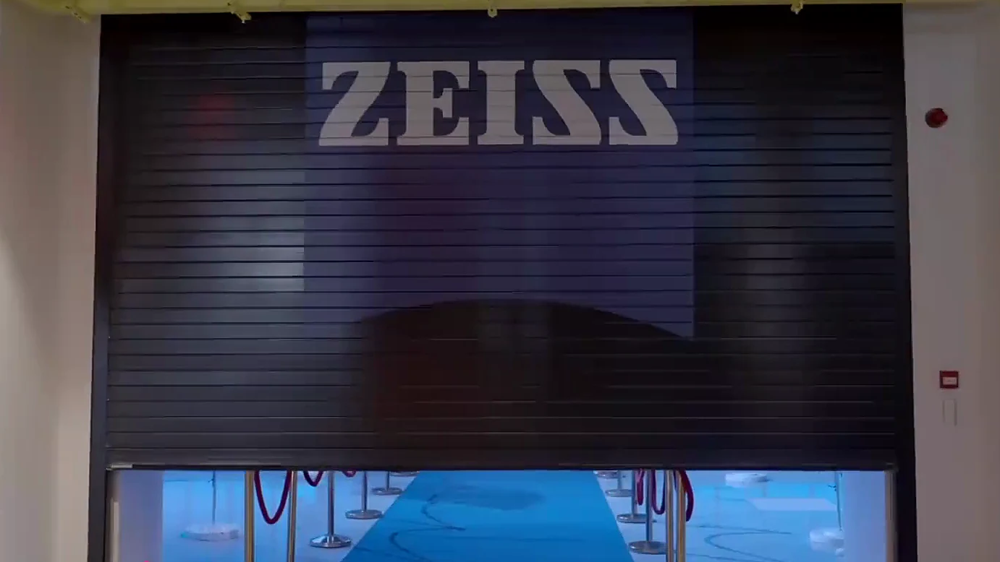
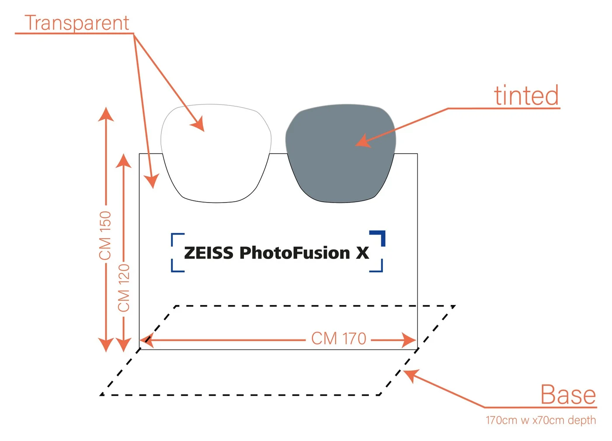
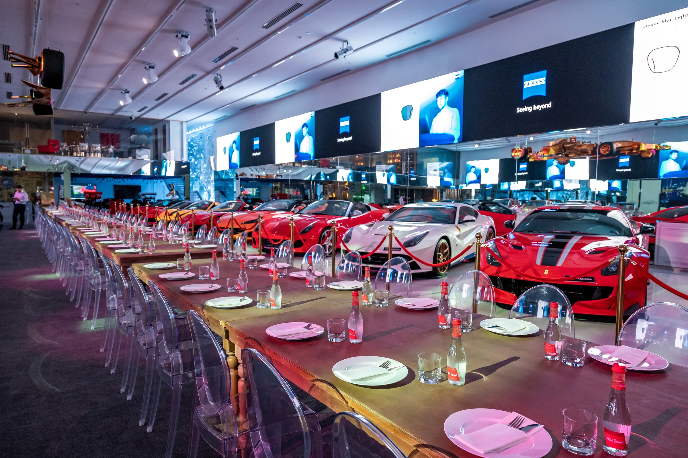

ZEISS
ZEISS. Two lenses, one launch.Antoni Gerges, Creative Director, Brand & Experiential · AntBrush, with MCX
Two lenses, one launch experience. I led the creative direction through AntBrush, with MCX as co-producer, carrying ZEISS’s campaign from the invitations into the room.
Read more
ZEISS Vision Care launched two lenses, ClearView and PhotoFusion X, in one night at The Space, Dubai, on 27 June 2022. I led it from the first sketch to the last screen: the idea of the night, the invitations, the films, the space. Creative direction led by Antoni Gerges through AntBrush; co-produced with MCX.
The campaign was ZEISS’s own; we made the invitations from its material. The ZEISS brackets frame what you should look at. First they framed only a date, on a bare wall. Then the invitation showed who was coming: the campaign athlete and the two lenses. A reminder followed, in the same frame.
The 3D models are made from the production artwork. The way in is one space: the long screen with our welcome film, and ten sail flags on the carpet. The two signs carry an arrow, the launch name and the logo, printed on both sides. The entrance wall is an L on the stairs.
Both photo walls were drawn into the sports hall before anything was printed.

My design. Two acrylic lenses, one clear and one tinted, the way PhotoFusion X darkens in the sun. Guests stand behind them.
The film for the 74-ft wall runs from IT’S TIME to NOT STANDARD.
From brief to result.
Two lenses. One night. Six days.
ZEISS Vision Care had six days from go-ahead to launch ClearView and PhotoFusion X.

Tease, then reveal.
ZEISS’s campaign was already made, and its brackets show where to look. So the invitations showed a date first, then who was coming.


The brackets lead you in.
One frame from the invitation to the door: flags, signs, the welcome screen, the entrance wall.
Step inside the lens.
The creative was mine, produced with MCX as co-producer: a booth of two acrylic lenses, one clear, one tinted, the way PhotoFusion X darkens in the sun.

74 feet. It’s time.
Our film for the LED wall counted down, from IT’S TIME to NOT STANDARD. Then the doors opened.
27 June 2022. The night.
12 pieces sent to production, two days before launch night.
Six days after the go-ahead: the keynote, then dinner among the supercars at The Space, Dubai.

Then every piece,
in 3D.
Each model, then the same piece on the night.
The way in
The long screen with our welcome film, and ten flags on the carpet.
Two signs
An arrow, the launch name, the logo.
The entrance wall
The athlete meets guests on the stairs.
The ClearView wall
A photo wall and a row of mannequins, all wearing the lens.
The photo booth
My design. Two acrylic lenses, one clear, one tinted. Guests stand behind them.
The eye
The back wall of the product display.
74 feet of screen
Our film for the main wall.


Doors.
The countdown ends, and the guests go in.Film · MCX
Keynote.
The two lenses, presented.Film · MCX
Dinner.
One long table, under the gold car. Then the film of it all.Film · MCX
Creative Director, Brand & Experiential
Film of the night by MCX.
before the doors opened